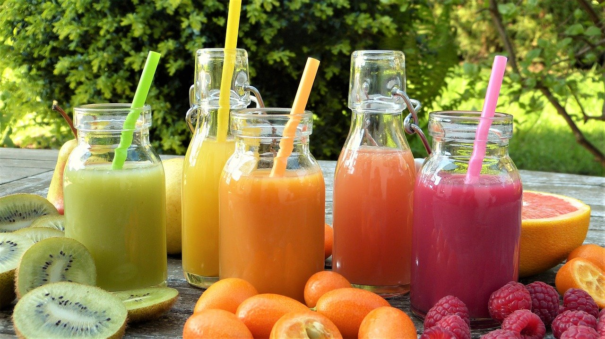

Self-soothing is possible through all 5 of the senses.
Try brainstorming ways to feel better through the 5 senses on a blank sheet of paper.
It is okay to list the same thing for multiple senses.
When you are ready, try visiting the links on the left for additional ideas and write down those you like.
Try brainstorming ways to feel better through the 5 senses on a blank sheet of paper.
It is okay to list the same thing for multiple senses.
When you are ready, try visiting the links on the left for additional ideas and write down those you like.
Candle
Light a candle and watch as the flame changes shape and color. Hold your hand near the flame and feel its warmth. Choose a candle with a color soothing to you. Look up "candle meditation," if this interests you.Flower
Pick a wildflower or buy one beautiful flower(s). Place it somewhere you pass by often. Feel the soft petals, leaves, and sturdy stem. Appreciate its beauty. Reappreciate its beauty every time you pass by.Art
Search online for the type of artwork and photography you like. Save your favorites to your laptop and phone. Set as your background, if you would like. Look at the art from time to time and appreciate the artist's creation. Go to a museum and take in the artwork there. Visit indoor or outdoor art installations. Check out art walks.Create your own art
Create your own art, if you feel inspired. This could include coloring, collaging, drawing, painting (on rocks, if you'd like), pottery, glass art, origami, nail art, henna, and photograpy. (Adult) coloring books can be ordered online, or coloring pages can be printed out. If you are not sure what colors to use, try looking for examples online. Creating a collage from photos, artwork, stickers, and magazine clippings is another option. Some enjoy scrapbooking. Decorate your room with photos and posters you enjoy looking at.Nature
Appreciate nature. On a nice day, lay down on the grass, look into the sky and watch the clouds. Rain can feel refreshing and help plants grow. Every snowflake is unique. Find a place surrounded by nature that you can escape to every now and then.Stars
Go stargazing and appreciate the beauty of our universe.
Music
Listen to the type of music you like. Sing or hum along. Go to a concert. See a musical. Sign up for music lessons, or learn from YouTube videos.


Nature
Look up sounds of nature and listen. Listen to the waves near a lake, or at the ocean. After leaves have fallen to the ground in autumn, step on a crunchy leaf and appreciate the sound it makes. Consider getting a rainstick (which sounds like rain falling), or making your own.Healing Sounds
Find a singing bowl which resonates at a sound frequency you like. Search for sounds that feel healing to you personally. Look into sound healing. If interested, try the chakra meditation below. Focus your attention on each chakra as you listen to the associated sound in the video.Particle Meditation
According to the description, this video contains relaxing electric music with binaural beats of 7,83 Hz. The rate of the binaural beats in this video correspond to the Schumann resonances, the natural electromagnetic frequency of the planet earth.Place your hands, palms facing up, near your knees, in a cross-legged position. Receive from the universe. Try placing your hands near each other, as if holding a ball of energy. Play with the energy, move your hands to shrink, expand, and rotate it, slowly so the energy does not flow away. If you have trouble feeling energy, place your hands very close to each other and feel the energy generated by heat from your body.
Aromatherapy
Fill the space with a hint of the scents you like, using a diffuser, a room spray or mist, a scented candle, or incense. Experiment until you find ones that work best for you. Try essential oils and breathe in deeply those you find calming. If you like citrus, try rubbing the peel on your skin.
Lotion, Soap, Perfume or Cologne
Find scents you like in lotions, soaps, perfumes, and colognes. Take time to breathe it in and appreciate the scent. Fragrance-free lotions and soaps can be calming as well.Food
Cook something with fragrant spices or bake something that smells good. Visit a bakery or restaurant with good food smells. Boiling cinnamon sticks in water can fill the room with the scent of cinnamon. If you like coffee, tea, or cocoa, breathe in the aroma between sips to enjoy it more fully.Food
What are your favorite foods? Comfort foods? Do you like trying food from different parts of the world? Do you ever try foods you have not tried before? Savor the flavors in every bite. Feel the food nourishing your body.
Drinks
What are your favorite chilled beverages? How about warmed or hot beverages? Consider infusing your water to add flavor. Brainstorm flavorful ingredient combinations for smoothies. Incorporate healthy foods in a way that tastes good to you. Treat yourself sometimes.